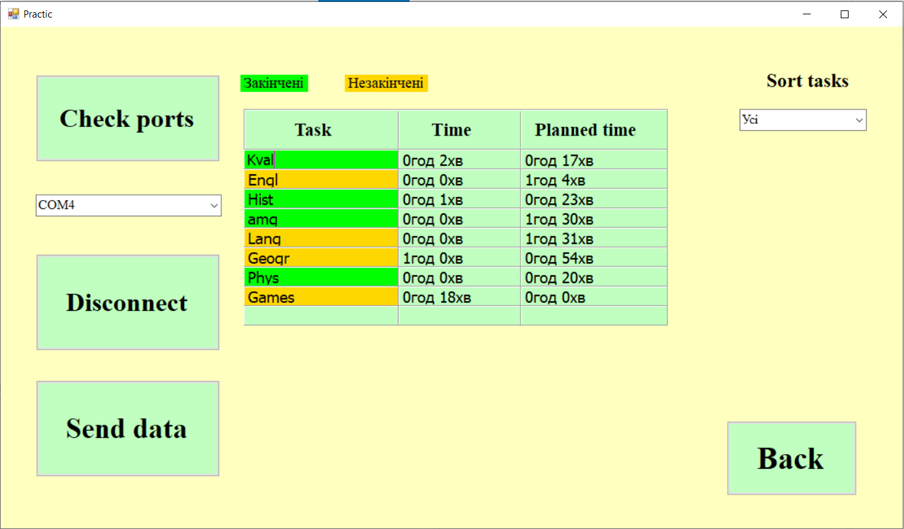

Актуальність: Людям постійно не вистачає часу. Люди схильні відволікатись на безліч чинників, які заважають виконанню найважливіших завдань. В кінці робочого дня ми часто не розуміємо на що було витрачено робочий час та чому ми нічого не встигаємо. Таке, мабуть, бувало у кожної людини. Для вирішення цієї проблеми використовують різні додатки для планування часу, але всі вони працюють на телефонах або комп’ютерах, що призводить до відволікання при використанні.
Метою моєї роботи була розробка пристрою для обліку часу по кожному виду діяльності.
Тема: автоматизація обліку робочого часу.
Керівництво для користувача
Завантаживши програму ви побачите титульну форму, з якої можна перейти до теорії або до форми, з якої можна перевірити час по кожній задачі: У розділі «Теорія» знаходиться основна інформація про засоби збереження часу та інструкція використання програми.

У розділі «Хронометраж по видам діяльності» знаходиться основна сторінка програми. У даному розділі можна з’єднатися з пристроєм та отримати всю інформацію з пристрою про кожну задачу. Для цього необхідно натиснути кнопку «Check ports» для знаходження доступних послідовних портів. Далі, обравши порт, до якого підключено пристрій, необхідно натиснути «Connect» для з’єднання.
Далі можна заповнити стовбець «Task» (Але важливо: необхідно заповнити всю таблицю, оскільки в іншому випадку на пристрої будуть пусті задачі). Після заповнення усього стовбця необхідно натиснути кнопку «Send data» і список задач на пристрої зміниться. Для отримання даних з пристрою необхідно натиснути кнопку «Send» на ньому. У DatagridView відобразиться вся інформація про кожну задачу. Задачі можна сортувати по статусу (закінчені та незакінчені).
Блок-схема